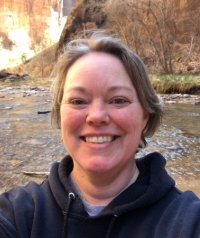

Jennifer Merritt | WDD 130
Hi! My name is Jennifer Merritt and I live in the town of Afton, Wyoming, USA. I enjoy being in the outdoors with my family, taking road trips (I love oceans and mountains!), reading and listening to audiobooks, crafts, rockhounding, and being a grandma. My family consists of my husband, three boys, a daughter-in-law, a future daughter-in-law, a grandson, and a brand new grandaughter. I've held an ecclectic list of jobs from fast food, house cleaning, newspaper business route driver, EMT, phlebotomist, and Elementary School and (currently) Middle School lunch lady as the baker. In Pathway, I have already completed my first certificate as a Technical Support Engineer and am starting on my second certificate in Web and Computer Programming. I am looking forward to taking this class.